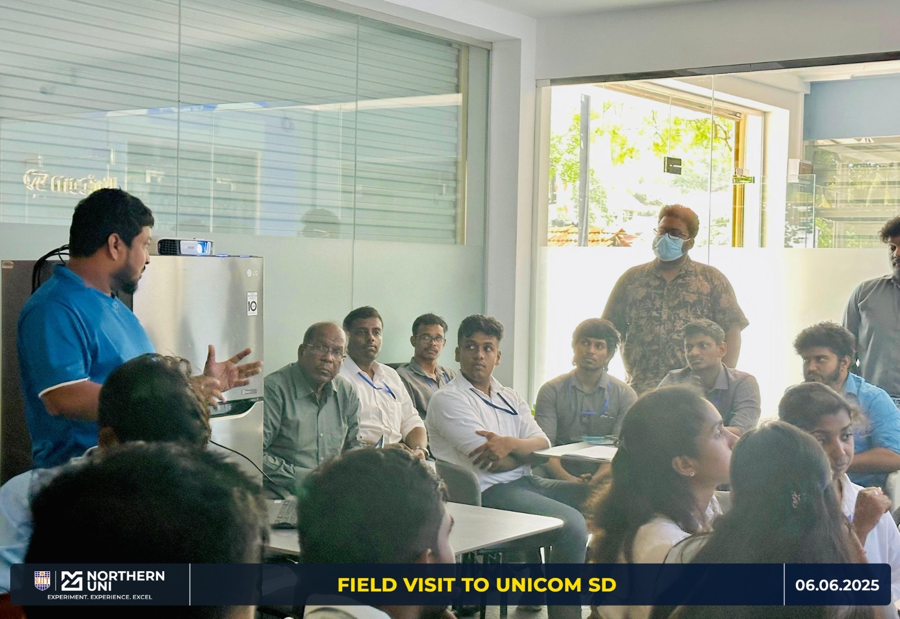
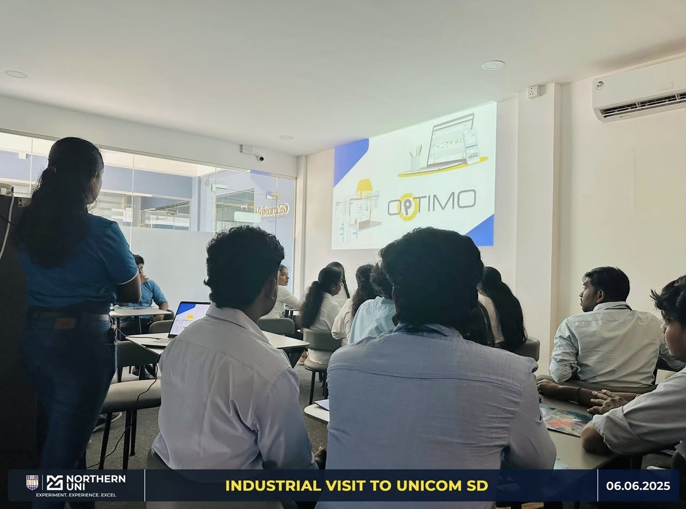
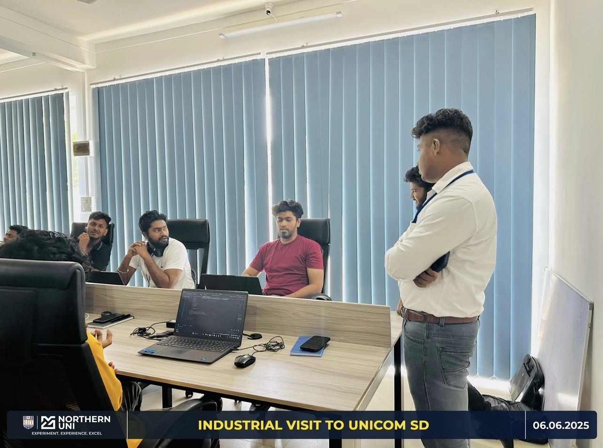
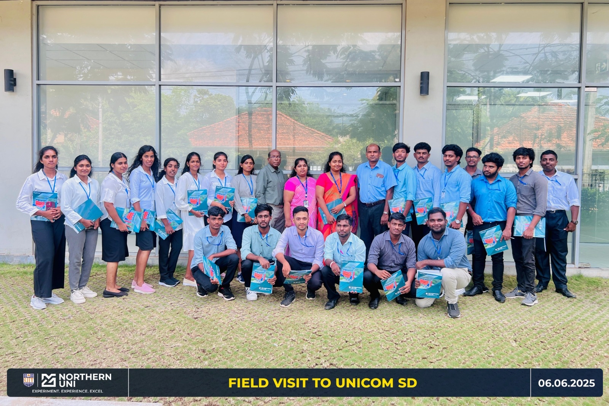
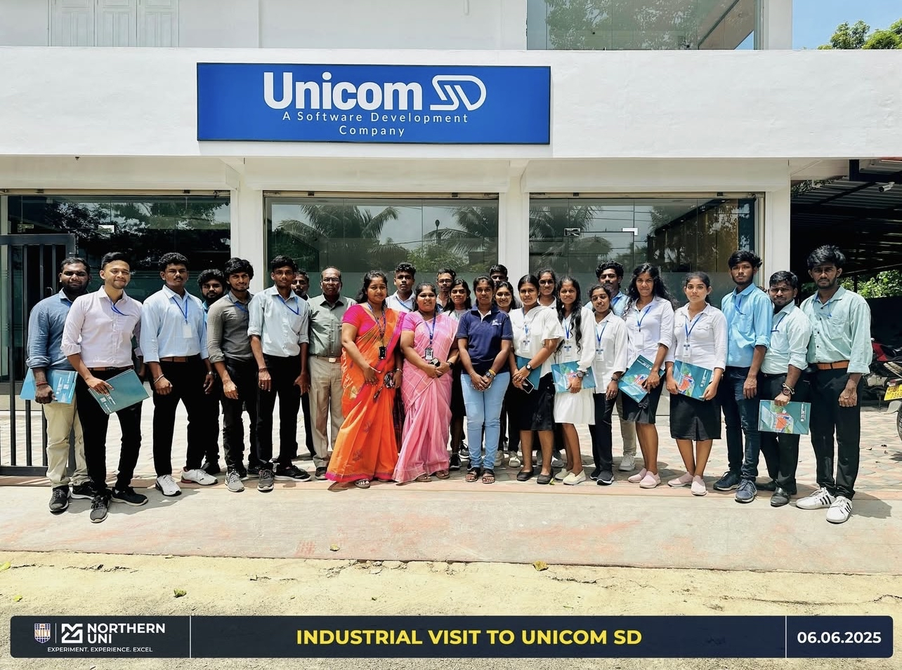
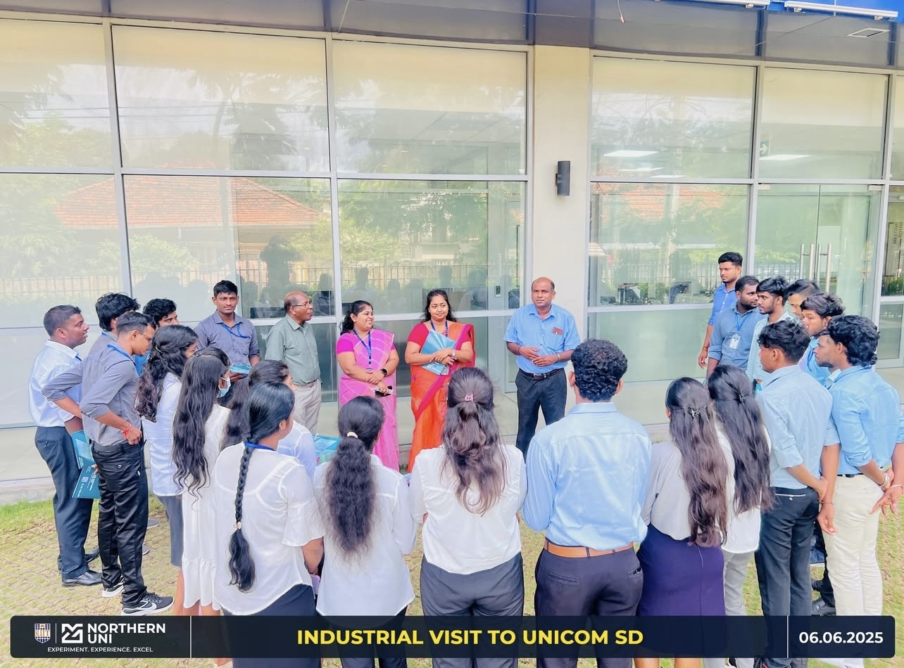

Week 10 - Industrial Visit to Unicom SD
About Unicom SD
Unicom SD is a rapidly growing technology company that offers innovative digital solutions tailored primarily for public service organizations. Their aim is to simplify and digitize the workflows of government and event-based clients through the development of practical, user-friendly software systems.
Key Projects at Unicom SD
- Optimo – Ticket Booking System: This platform was used during the Paris Paralympics 2024, where it efficiently handled large-scale ticketing operations, showcasing the system's robustness and scalability in a high-profile international event.
- Bubblt Town: A white-label mobile app created for city councils to improve civic engagement. It enables citizens to receive news, events, and emergency alerts in real-time, strengthening the bond between the public and their local government.
- Poddle: A next-gen customer engagement app that utilizes NFC technology to deliver tailored offers and reward programs. It not only helps businesses attract and retain customers but also enhances user experience through seamless interactivity.
Client Base and Impact
- Inner West Council (Australia): A key government partner benefiting from Unicom’s civic engagement platforms.
- Local Governments and Councils: Several other regional councils collaborate with Unicom SD to digitize community outreach.
- International Events: Trusted by global organizations such as the Paris Paralympics 2024, demonstrating their global reliability and expertise.
Technologies Used at Unicom SD
- .NET: Used for developing scalable backend services and APIs, enabling secure and efficient data processing.
- Angular: Powers their modern and responsive web interfaces, providing users with interactive and fast-loading applications.
- Flutter: Enables Unicom to build beautiful cross-platform mobile apps from a single codebase, reducing development time.
- Microsoft Azure: Offers robust cloud infrastructure, allowing Unicom SD to ensure high availability, performance, and global reach.
Internship Opportunities and Requirements
- Unicom SD welcomes interns who possess strong foundational coding skills and an eagerness to learn in a fast-paced environment.
- Students with knowledge in Object-Oriented Programming (OOP), and familiarity with technologies like .NET, Angular, or Flutter are highly preferred.
- Applicants are encouraged to showcase personal or academic projects, preferably shared on platforms like GitHub, as a demonstration of practical experience.
Employee Interactions and Insights
- Students engaged in productive discussions with software engineers and project leads, gaining valuable exposure to professional team dynamics.
- Insights were shared about managing communication with clients and balancing project deadlines.
- We learned how teams handle real-time challenges such as live deployment issues and user feedback loops.
- The team emphasized best practices like clean code writing, version control, and the importance of staying updated with industry tools.
Key Takeaways
- Even mid-sized companies like Unicom SD can make a significant impact on global platforms such as the Paris Paralympics.
- The visit confirmed that real internship opportunities are accessible to students who show passion, preparedness, and solid technical skills.
- We walked away with better clarity about what to expect in a real software development environment, and how to align our academic learning with industry demands.
Session Images

Session Image 1

Session Image 2

Session Image 3

Session Image 4

Session Image 5

Session Image 6